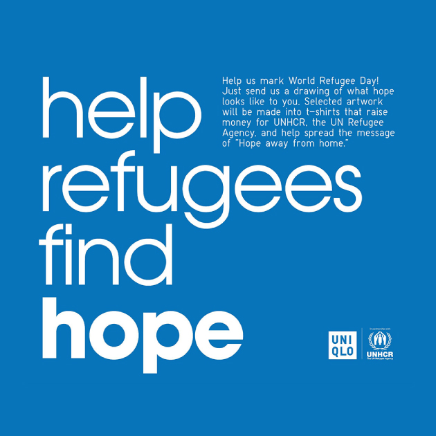

유니클로의 난민 및
강제 이주민에 대한 지원
2023년 난민과 함께하는
청년 예술 콘테스트

여러분의 예술성은 세상을 바꾸는 힘을 가지고 있습니다. 예술을 통해 난민들을 지원해주세요!
유니클로는 2023년 세계 난민의 날을 기념하여 유엔난민기구(UNHCR)와 함께 ‘난민과 함께하는 청년 예술 콘테스트’를 개최합니다. 2020년에 유엔난민기구에서 개최한 이 콘테스트는 10대에서 30대까지 누구나 참가할 수 있습니다. 미래 세대를 대표하는 어린이와 청년들의 재능을 전 세계에 공유하고, 예술 작품을 통해 난민 지원에 대한 생각을 나누는 장이 되는 것이 목표입니다. 유니클로는 2023년에 열리는 세 번째 콘테스트의 공동 주최자로, 본 공모전의 5개 수상 작품은 티셔츠로 제작되어 일부 유니클로 매장에서 판매되며, 수익 전액은 유엔난민기구의 난민 지원 프로그램에 사용됩니다. 콘테스트와 함께 젊은 난민들을 포함한 예술가 지망생들을 위한 예술 워크샵도 전 세계 여러 국가와 지역에서 열릴 계획이며, 공모전은 9월 말까지 접수 가능합니다.

강제 이주민들이 희망을 찾을 수 있도록 응원의 마음을 전하세요.
강제 이주민들이 희망을 찾을 수 있도록 응원의 마음을 전하세요.
2023년 대회의 주제는
"타지에서 마주치는 희망(Hope Away From Home)"입니다.
이번 콘테스트는 난민들이 피난처의 사회에 받아들여져 희망을 발견하고 생활의 재건으로 이어지는 포용의 중요성을 조명합니다. 새로운 친구를 만나고, 배울 곳을 얻고, 가족과 재회하고, 일자리를 찾는 것. 난민이 사회에 받아들여져, 다음 한 걸음을 내딛기 위한 힘이 될 수 있는 아트 작품을 모집합니다.
대회 개요
대상/기타상
- 5개의 우승 디자인은 티셔츠로 제작되어 일부 유니클로 매장과 UNHCR 매장에서 판매되어 강제 이주민을 위한 기금을 마련에 사용될 것입니다. 우승자는 트로피와 자신의 디자인이 새겨진 티셔츠를 받게 됩니다. 수상한 디자인은 UNHCR 본부 특별 전시회에 전시되며 유니클로와 UNHCR 소셜 미디어 플랫폼에서 수백만 명의 팔로워들과 공유될 것입니다.
제출방법
- 이 대회에는 10-30세의 사람들이 초대됩니다. 참가자들은 전문적인 예술가일 필요가 없습니다. 젊은 난민, 국내 실향민, 망명 신청자, 무국적자들도 참여할 수 있습니다. 손으로 직접 그리거나 또는 컴퓨터나 태블릿을 사용하여 그림 한 점 또는 만화 같은 예술 작품을 만들고 아래 제출 양식을 사용하여 디지털 자료로 제출하십시오. 손으로 그린 작품들을 디지털 형식으로 변환하려면 스캔하거나 사진을 찍어야 합니다. 우리는 pdf, jpeg, png 형식의 도면을 받습니다. 데이터 크기는 2048×2048px, 해상도는 350dpi를 권장합니다.
심사기준
- 제출물은 창의성과 메시지에 따라 평가됩니다. 추상적인 디자인도 환영합니다.
제출기간
- 2023년 6월 15일~ 9월 30일까지(23:59 CEST 마감)
결과발표
-
기간: 2023년 11월~12월
당첨자분께 이메일로 안내해 드리며, 일정은 변경될 수 있습니다.
UPDATED / 2023.08.03